🎯 Grounding Evaluation Hub
교수님이 보신 "이상한 에피소드 · 오예측"을 grounding 관점에서 해부한다.
측면·OOD에서 base PaliGemma2가 바구니를 안정적으로 잡는다면 → 오예측은 grounding이 아닌 action head 문제다.
0 무엇을 어떻게 측정했나 (목표 · 데이터 · 지표)
- PaliGemma 계열(base PG2 · exp57 · exp58 · exp59 · exp64):
"<image>detect gray basket" - Kosmos 계열(pure Kosmos · exp56):
"<grounding><phrase> gray basket</phrase>"(Kosmos 전용 grounding 문법)
<loc> 좌표 또는 Kosmos patch 좌표)를 출력한다. 학습/튜닝 없이 프롬프트만으로 위치를 묻는 zero-shot grounding.
측면 4경로: 좌좌·우우·좌우·우좌 경로, 경로당 4ep × 6프레임(시간순).
OOD 11장: 학습에 없던 의자 이미지(오탐 검증).
cx_MAE: 박스 중심 x가 정답과 얼마나 가까운가. 정답 = HSV 색분할로 검출한 회색 바구니 중심(근사 GT).
full-frame: 박스 면적>0.9 비율(화면 거의 다 덮음 = 위치정보 무력).
OOD 오탐: 바구니 없는 의자에 박스 친 비율.
A 핵심 결론
B 모델 비교 매트릭스 — 표준 49프레임 + 의자 11장
| 모델 | 백본 / LoRA | hit | cx_MAE | full-frame | OOD 오탐 | 판정 |
|---|---|---|---|---|---|---|
| base PG2 | PaliGemma2 / 없음 | 98% | 0.126 | 0% | 9% | ✅ 최균형 |
| pure Kosmos-2 | Kosmos-2 / 없음 | 100% | 0.123 | 0% | 100% | 바구니↑·OOD구분 제로 |
| exp57 | PaliGemma1 / LM | 84% | 0.115 | 0% | 9% | hit↓·cx정밀 |
| exp58 | PaliGemma2 / LM | 100% | 0.191 | 57% | 27% | 부분붕괴+OOD최악 |
| exp59 | PaliGemma2 / LM hard-neg | 98% | 0.129 | 6% | 0% | OOD억제 최고 |
| exp64 | PaliGemma2 / vision | 94% | 0.150 | 92% | 9% | full-frame 붕괴 |
| exp56 | Kosmos-2 / LM | 0% | — | — | — | LoRA가 Kosmos grounding 파괴 |
C 측면 경로 에피소드 갤러리 — base PG2, 교수님 오예측 대응
| 모델 | left_left | right_right | left_right | right_left | 판정 |
|---|---|---|---|---|---|
| base PG2 | 100/0 | 83/0 | 100/0 | 83/0 | ✅ 깔끔(miss=f0만) |
| pure Kosmos | 100/0 | 100/0 | 100/0 | 100/0 | 측면 hit 최고(단 OOD 100%) |
| exp57(PG1) | 100/0 | 61/0 | 94/0 | 78/0 | 측면 검출률 하락 |
| exp58 | 100/61 | 100/56 | 100/78 | 100/39 | 부분 full-frame 붕괴 |
| exp59 | 100/6 | 83/6 | 100/6 | 83/11 | 비교적 깔끔 |
| exp64 | 100/100 | 100/100 | 100/100 | 94/94 | 측면도 full-frame 전면붕괴 |
| exp56(Kosmos) | 0/0 | 0/0 | 0/0 | 0/0 | LoRA가 Kosmos 파괴 |
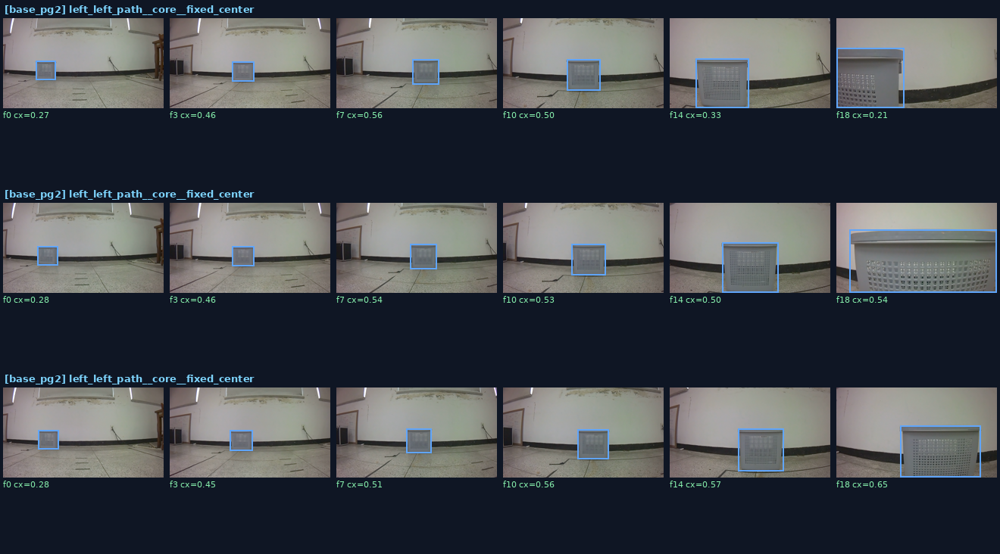
C2 극단·다양성 시나리오 (free 데이터, base PG2) — "데이터가 적은가?" 보강
| 모델 | basket극단 | 로봇거리 | 대각선 | 저조도 | 판정 |
|---|---|---|---|---|---|
| base PG2 | 92/0 | 94/0 | 95/2 | 100/0 | ✅ 전부 깔끔 |
| pure Kosmos | 100/0 | 100/0 | 100/0 | 100/0 | 견고(단 OOD 100%) |
| exp57(PG1) | 86/3 | 86/0 | 88/2 | 92/0 | hit 낮음, full 소량 |
| exp59 | 92/8 | 92/22 | 95/14 | 100/17 | 극단조건 full-frame 붕괴 |
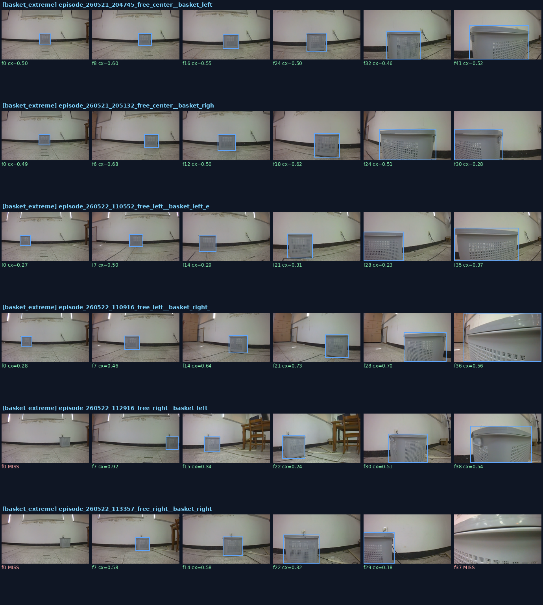
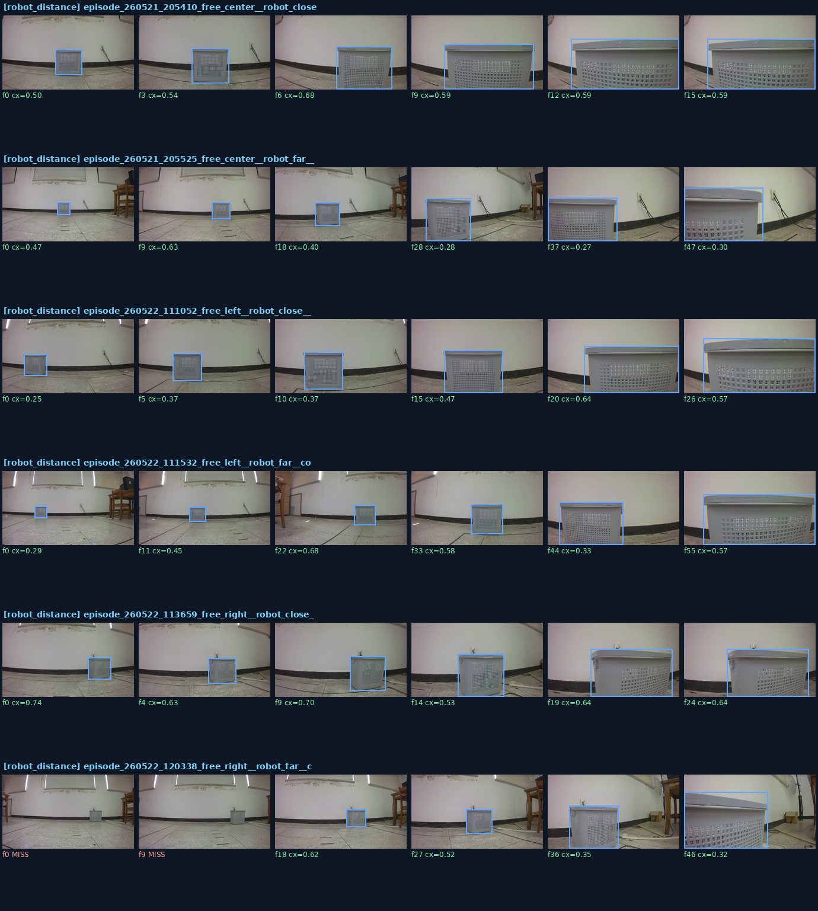
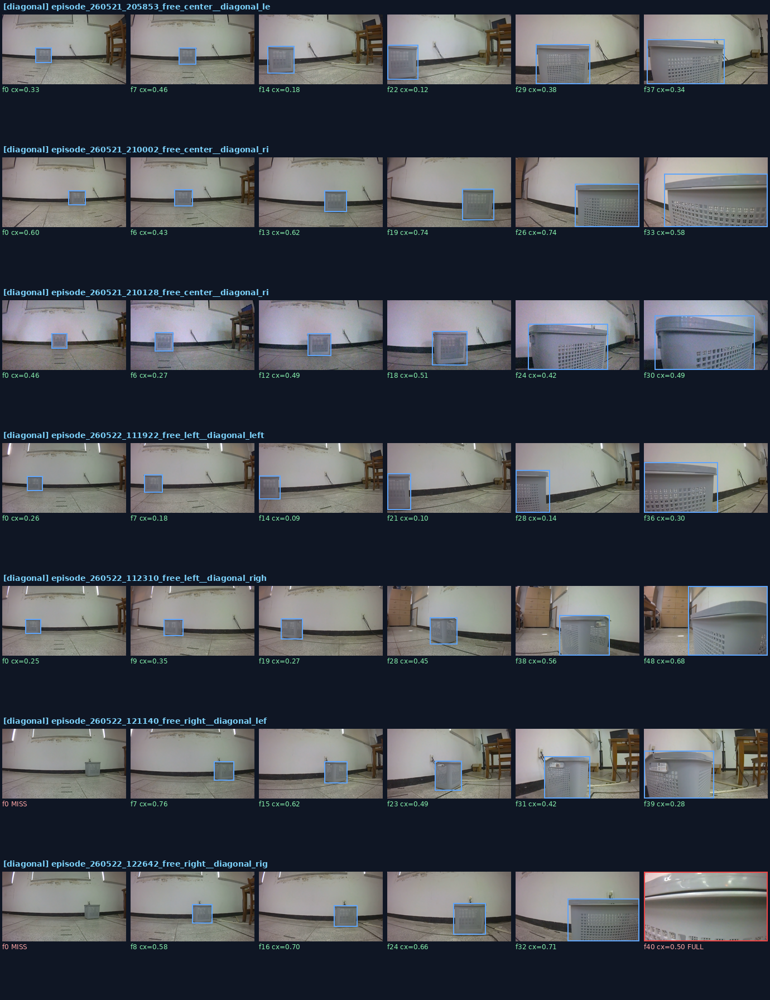
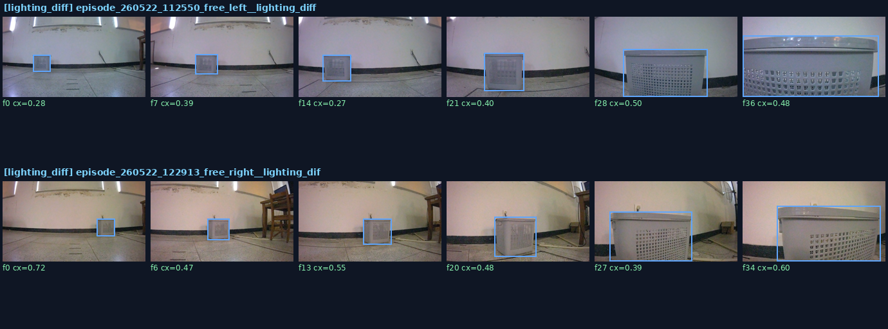
C3 OOD 오탐 — 지금 중요한가? — 의자에 "detect gray basket"
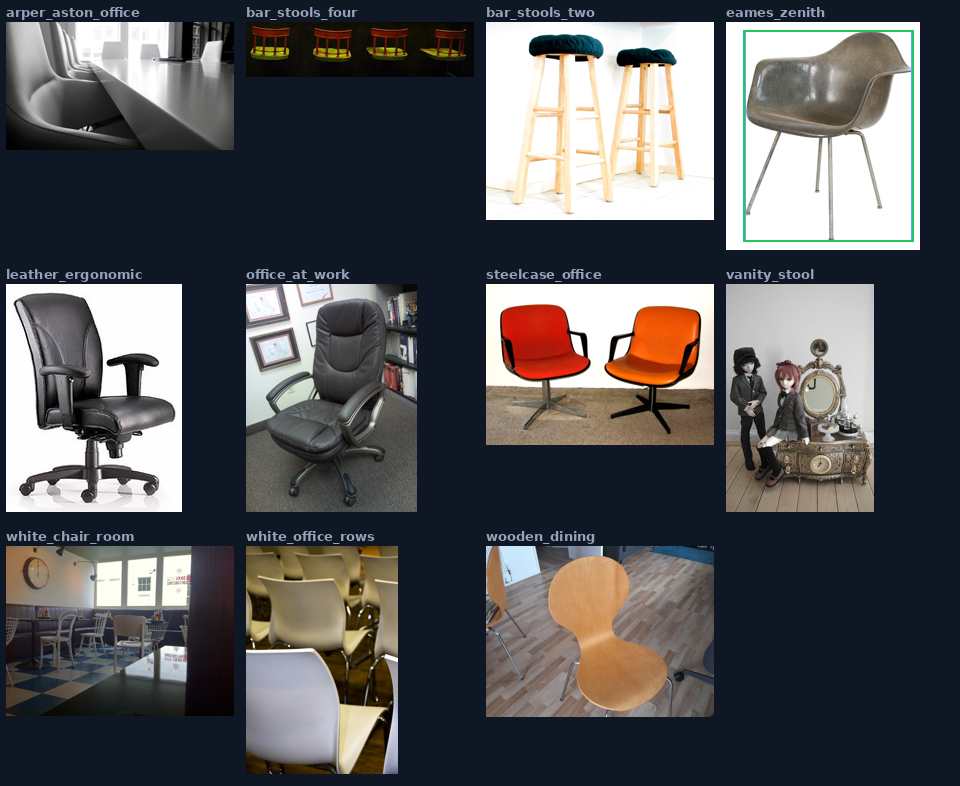
exp64: 9% / exp57: 9% / exp59: 0% (hard-neg 효과)
exp58: 27% / pure Kosmos: 100% (전부 오탐)
C4 증강(Augmentation) 강건성 — base PG2 — "데이터셋이 적은가?"의 직접 답
| 변형 | hit | cx_drift | full-frame | 변형 | hit | cx_drift | full-frame | |
|---|---|---|---|---|---|---|---|---|
| original | 100% | 0.000 | 0% | downscale | 100% | 0.001 | 0% | |
| bright_up | 100% | 0.001 | 0% | rotate +12° | 100% | 0.008 | 0% | |
| bright_down | 100% | 0.001 | 0% | rotate −12° | 100% | 0.009 | 0% | |
| low_contrast | 92% | 0.001 | 0% | hflip(좌우반전) | 100% | 0.002 | 0% | |
| blur | 100% | 0.001 | 0% | occlude(부분가림) | 100% | 0.002 | 0% | |
| noise | 100% | 0.001 | 0% |
| 모델 | 회전±12° | 가림 | 저대비 | 나머지(밝기·블러·노이즈·저해상도·반전) |
|---|---|---|---|---|
| base PG2 | 100/0 | 100/0 | 92/0 | 전부 100/0 |
| pure Kosmos | 100/0 | 100/0 | 100/0 | 전부 100/0 |
| exp57(PG1) | 100/0 | 100/0 | 100/0 | 전부 100/0 |
| exp59 | 100/8~16 | 100/8 | 100/0 | 나머지 100/0 |
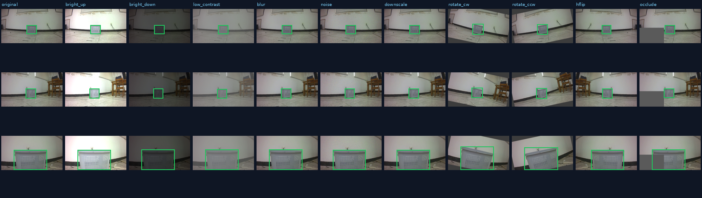
D 모델별 BBox 그리드 — 같은 8프레임, 초록=정상·빨강=full-frame

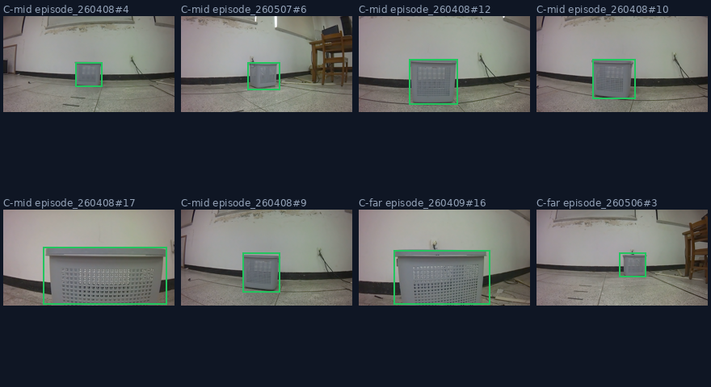
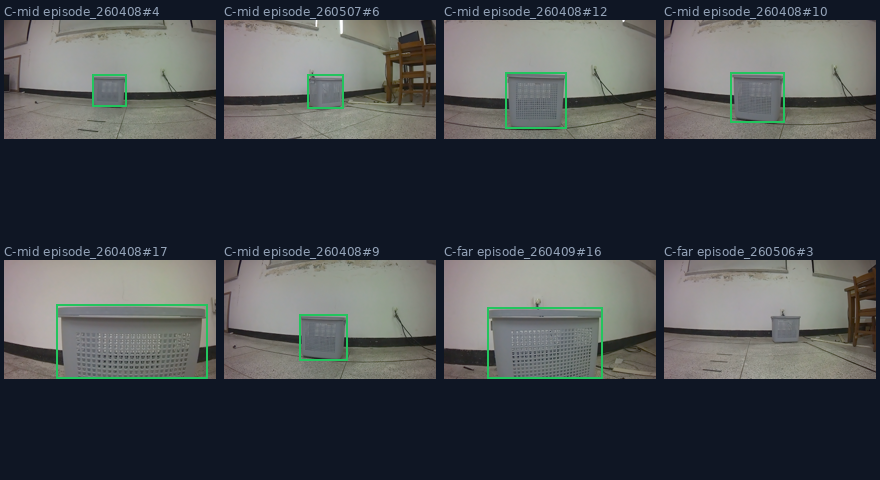
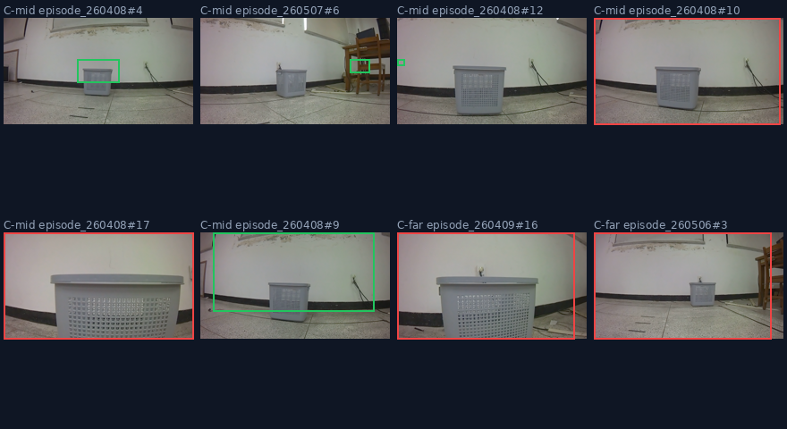
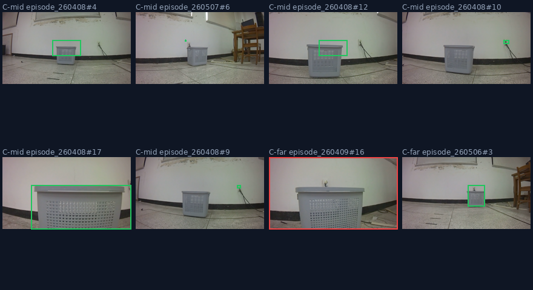
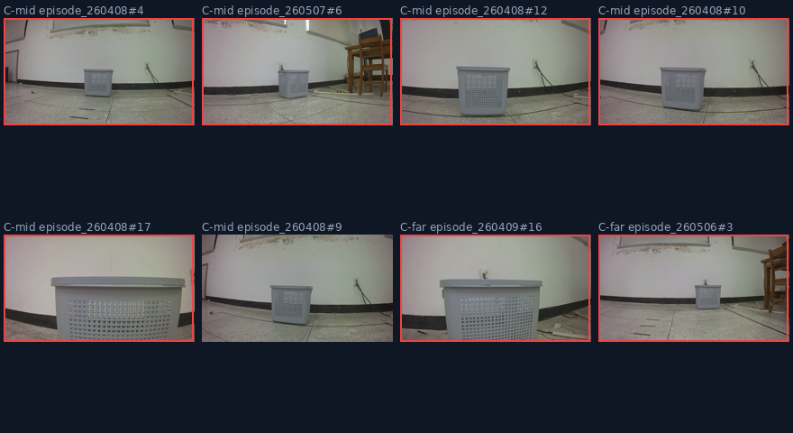
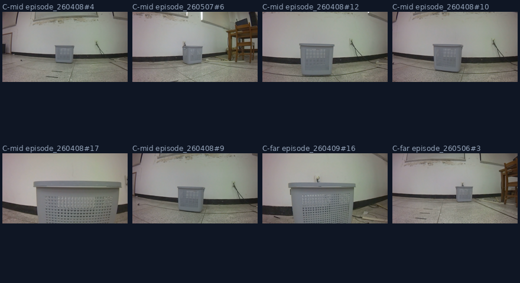
E 해석 & 다음 단계
1. 측면·OOD에서 base PG2가 견고(주행구간 추적 100%, full-frame 0%) → 오예측의 원인은 grounding이 아니다. 실주행 궤적 붕괴는 action head(조향)·action chunk·데이터 분포 쪽 문제로 좁혀진다. 유일한 grounding 약점은 출발 첫 프레임(바구니 화면 밖)인데, 이는 STOP/대기 로직으로 처리할 영역이지 grounding 모델 교체로 풀 문제가 아니다.
2. 7개 모델 중 base PG2를 종합적으로 이긴 것은 없다. pure Kosmos는 바구니 검출은 100%지만 의자에 100% 오탐(negative 구분 불가), vision-LoRA(exp64)·exp58은 full-frame 붕괴, exp56은 LoRA가 Kosmos를 파괴. exp59만 OOD 억제(0%)라는 부분 미덕이나 cx 안정성은 더 나쁨.
2-1. LoRA의 보편적 위험: Kosmos LoRA(exp56)·PG2 vision LoRA(exp64)·PG2 LM LoRA(exp58) 모두 grounding을 악화시켰다. 소규모 데이터 LoRA가 사전학습된 grounding 표현을 망가뜨린다는 일관된 신호.
3. 데이터 부족 문제 아님: 11가지 증강(회전·반전·블러·저해상도·가림·조명)에 base PG2가 hit 100%·중심이동 ~0으로 견고. 사전학습 지식이 소규모 데이터의 빈틈을 메운다. 유일 약점 = 저대비(92%) → 저조도 데이터가 보강 1순위.
4. 결론: grounding = base PG2 고정. 다음 작업은 의자 객체 데이터 재수집 + Stage2 action 재학습으로 오예측(action)을 직접 공략.
scripts/eval_grounding_hub.py · scripts/grounding_sideangle_episodes.py · 데이터: docs/v5/grounding_hub/hub_results.json